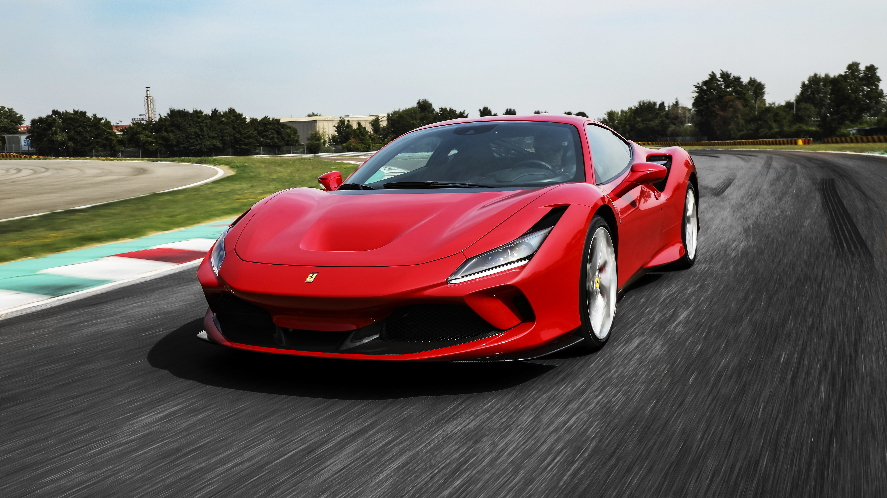
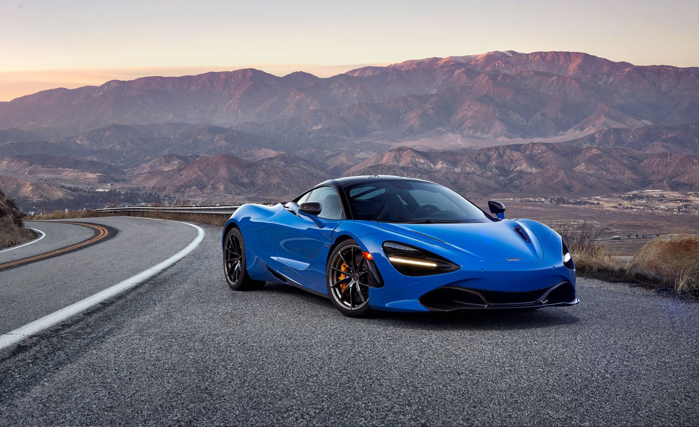
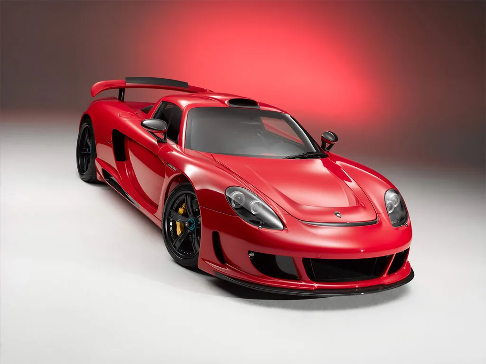
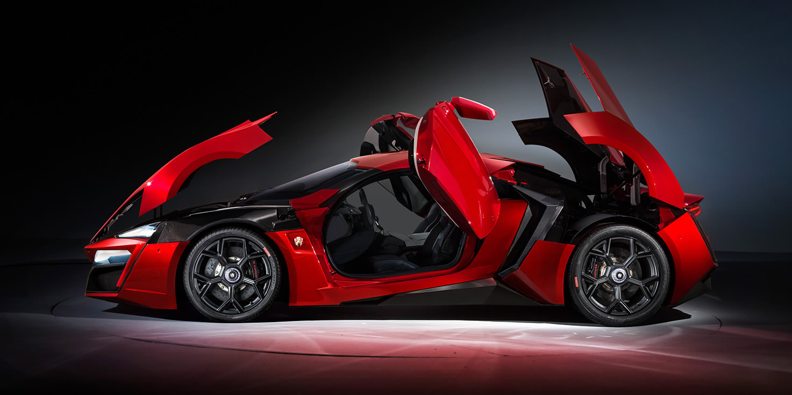

Ferrari F8 Tributo
The Ferrari F8 Tributo is a high-performance sports car featuring a twin-turbocharged V8 engine that delivers 710 horsepower. With its sleek aerodynamic design and advanced technologies, it offers an exhilarating driving experience. The F8 Tributo accelerates from 0 to 60 mph in just 2.9 seconds, making it one of the most impressive cars in its class. Ferrari's attention to detail is evident in the interior, combining luxurious materials with cutting-edge tech, all designed to create a harmonious balance between speed, style, and comfort.
Lamborghini Aventador

The Lamborghini Aventador is an aggressive supercar with a naturally aspirated 6.5-liter V12 engine, delivering a thrilling 730 horsepower. Known for its bold, angular styling and distinctive scissor doors, the Aventador embodies Lamborghini's commitment to high-performance engineering and striking aesthetics. The car reaches 0 to 60 mph in just 2.9 seconds, with a top speed of over 217 mph. The Aventador combines extreme performance with advanced aerodynamics, making it a true road-going masterpiece for speed enthusiasts.
Porsche 911 Turbo S

The Porsche 911 Turbo S is a benchmark for luxury, performance, and precision engineering. Equipped with a 3.8-liter twin-turbocharged flat-six engine producing 640 horsepower, it delivers exceptional acceleration and handling. The 911 Turbo S can go from 0 to 60 mph in just 2.7 seconds, thanks to its advanced all-wheel-drive system and sophisticated suspension. Known for its refined driving experience, the 911 Turbo S offers a perfect blend of raw power and elegant design, with an interior featuring premium materials and intuitive tech interfaces.
McLaren 720S
The McLaren 720S is a lightweight and aerodynamic supercar designed for maximum speed and handling. Powered by a 4.0-liter twin-turbo V8 engine, it produces 710 horsepower and reaches 0 to 60 mph in just 2.7 seconds. Its design is focused on reducing weight while enhancing performance, using carbon fiber and other lightweight materials to ensure incredible agility. The 720S features an advanced suspension system and active aerodynamics that allow it to tackle corners and straightaways with unmatched precision. Inside, the cabin is designed with a focus on driver engagement, offering a minimalistic yet high-tech environment.
Porsche Carrera GT
The Porsche Carrera GT is a stunning supercar with a 5.7-liter V10 engine that delivers 605 horsepower, providing exceptional performance and handling. Known for its precision engineering and bold styling, the Carrera GT is a true driver's car that blends raw power with advanced technology. With a top speed of 205 mph and an acceleration from 0 to 60 mph in just 3.5 seconds, the Carrera GT offers an exhilarating experience on the road. The car's lightweight carbon fiber body, coupled with a manual transmission, ensures an unmatched driving experience that enthusiasts continue to admire.
Lykan Hypersport
The Lykan Hypersport is a rare, ultra-luxury supercar powered by a 3.7-liter twin-turbocharged flat-six engine producing 780 horsepower. Known for its futuristic design and extravagant features, the Hypersport is one of the most expensive cars in the world, with a top speed of 245 mph. Acceleration from 0 to 60 mph takes just 2.8 seconds, making it one of the fastest cars ever built. The car's exterior features diamond-encrusted headlights, and the interior boasts luxurious leather and advanced tech, making it as extravagant as it is fast.